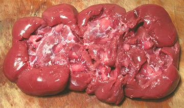

Every beef has two of these, so you might wonder why they aren't common in markets. Actually, there are several reasons. Many kidneys are destroyed in the USDA inspection process. Then there's the general degradation of American cooking knowledge, and most Americans are now so distant from the source of their food they've become squeamish about anything recognizable as part of an animal. In many ethnic cuisines this is a prized part of the animal.
I have a cookbook by a woman who married a Hungarian. Her husband gave her his mothers recipe and insisted on frequent servings of kidney stew. She dutifully made the stew but, being a good Eisenhower era American, couldn't stomach the thought of eating kidneys, so always made something else for herself. Then she got knocked up and dropped a kid. One day, after making kidney stew for her husband and a separate dinner for the baby, she was just too tired to make anything for herself. In hungry desperation she tried the stew. Her reaction, "Hey, this is good!".
Beef Kidneys vs. Veal Kidneys: Most kidneys sold in North America are from young animals and can qualify as "Veal Kidneys". Beef kidneys from older animals are larger, less tender, and tend to be smellier. Veal kidneys can be treated in the same way as lamb kidneys, including quick cooking by dry heat.
More on Cuts of Beef.
Kidneys sold in North America are generally thoroughly cleaned and well prepared with all external membranes and fat removed. I prefer them nice and red, but parts contacting the shrink wrap can become a duller color. This is due to oxygen deprivation and isn't a problem so long as the kidney is fresh. It should not have a strong smell.
If you find dealing with the whole kidney difficult, you can cut it in half lengthwise, or even into quarters.
You should be able to remove all the fat with almost no loss of kidney
meat at all. The final result should look like the lower photo. You can
now cut the kidney into pieces as called for in your recipe. Further
processing depends on usage.

For Soup: You want to keep the soup from looking muddy, so parboiling is called for. Cut the the kidney into chunks or slices as best suited to later use or finish cutting. Put in a pot. Cover with plenty of cold water and bring to a boil over high heat (uncovered or it'll foam over when it boils). Rinse the kidneys and clean the pot. Repeat this process one more time.
For Frying: Kidneys are usually finish cut and fried before stewing or similar uses. After cutting I usually soak the pieces in 3 changes of cold salted water for about 1/2 hour total. Then drain thoroughly and fry.
Some recipes don't bother with this at all and some call for a soak in
milk which is supposed to be the most effective. Beef kidneys in the U.S.
today are generally from rather young beefs, so extreme methods to
"deodorize" are not necessary. Older recipes may presume an older animal
and recommend more strenuous cleaning.